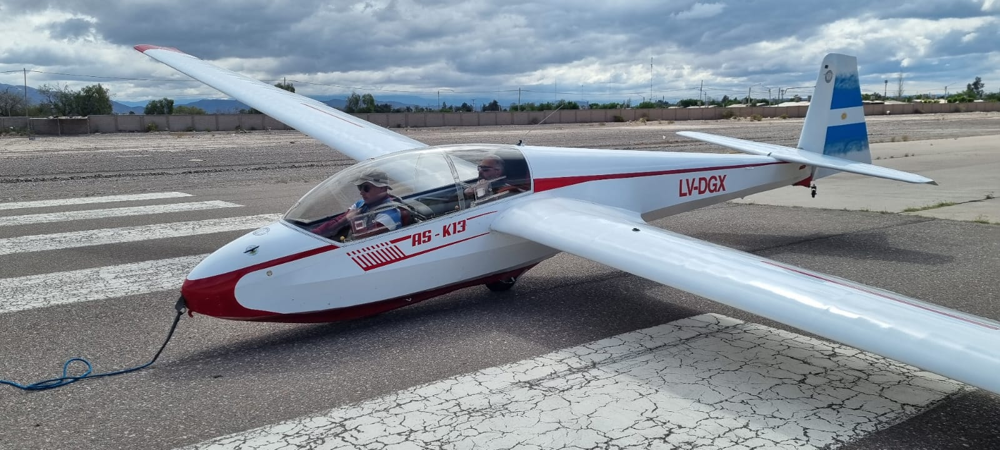
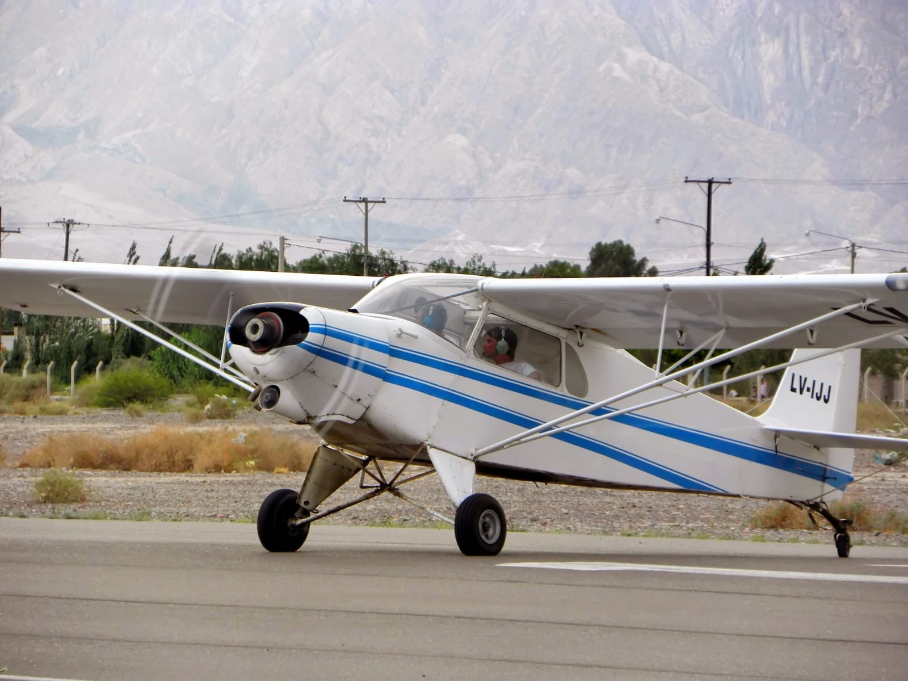
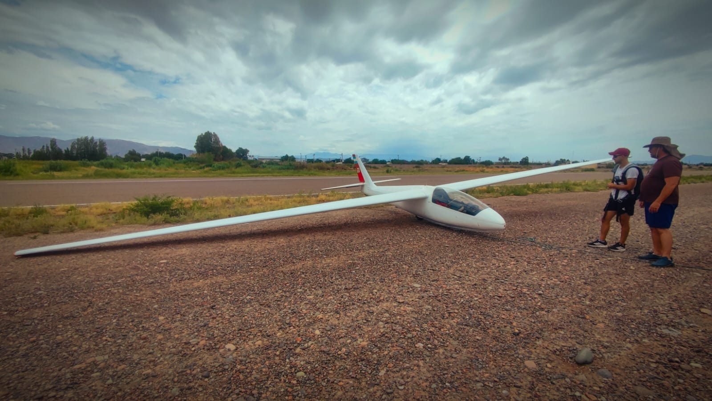

Biplaza
Schleicher K-13
Planeador de entrenamiento en doble comando, la base de toda la instrucción a vela.

Barracas del Centro de Aviación Civil San Juan
Vuelo a vela sin motor, aprovechando las corrientes térmicas de la Precordillera sanjuanina.
Flota
Contamos con planeadores biplaza para instrucción y monoplaza de alto rendimiento, además del avión remolcador compartido con la Barraca de Motor.

Planeador de entrenamiento en doble comando, la base de toda la instrucción a vela.

Planeador monoplaza de alto rendimiento, para pilotos que ya volaron en doble comando.

Avión remolcador que engancha y lleva a altura a los planeadores para iniciar el vuelo a vela.

Hangar
Los planeadores se preparan en pista antes de cada vuelo y se resguardan junto al resto de la flota, con revisión previa a cargo del equipo en tierra.
Escuela de vuelo
El Curso de Piloto de Planeador comienza con instrucción en doble comando en el K-13 y avanza, con horas y experiencia, hacia el vuelo solo y el aprovechamiento de térmicas.
Instructores
La Barraca de Planeador cuenta con instructores con habilitación de vuelo a vela otorgada por la ANAC, especializados en instrucción de doble comando y técnicas de remolque. Contactanos para conocer la disponibilidad y coordinar tu primer vuelo.
Escribinos y te contamos todo sobre la Barraca de Planeador y nuestros cursos.
Contactanos